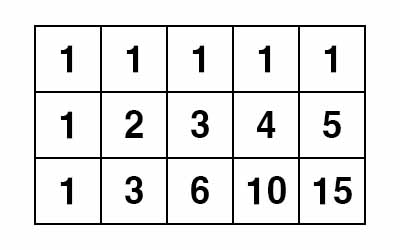

백준 10164. 격자상의 경로
- https://www.acmicpc.net/problem/10164
-
문제 :
행의 수가 N이고 열의 수가 M인 격자의 각 칸에 1부터 N×M까지의 번호가 첫 행부터 시작하여 차례로 부여되어 있다. 격자의 어떤 칸은 ○ 표시가 되어 있다. (단, 1번 칸과 N × M번 칸은 ○ 표시가 되어 있지 않다. 또한, ○ 표시가 되어 있는 칸은 최대 한 개이다. 즉, ○ 표시가 된 칸이 없을 수도 있다.)
행의 수가 3이고 열의 수가 5인 격자에서 각 칸에 번호가 1부터 차례대로 부여된 예가 아래에 있다. 이 격자에서는 8번 칸에 ○ 표시가 되어 있다.

격자의 1번 칸에서 출발한 어떤 로봇이 아래의 두 조건을 만족하면서 N×M번 칸으로 가고자 한다.
● 조건 1: 로봇은 한 번에 오른쪽에 인접한 칸 또는 아래에 인접한 칸으로만 이동할 수 있다. (즉, 대각선 방향으로는 이동할 수 없다.)
● 조건 2: 격자에 ○로 표시된 칸이 있는 경우엔 로봇은 그 칸을 반드시 지나가야 한다.
위에서 보인 것과 같은 격자가 주어질 때, 로봇이 이동할 수 있는 서로 다른 경로의 두 가지 예가 아래에 있다.
● 1 → 2 → 3 → 8 → 9 → 10 → 15
● 1 → 2 → 3 → 8 → 13 → 14 → 15
격자에 관한 정보가 주어질 때 로봇이 앞에서 설명한 두 조건을 만족하면서 이동할 수 있는 서로 다른 경로가 총 몇 개나 되는지 찾는 프로그램을 작성하라. -
입력 :
입력의 첫째 줄에는 격자의 행의 수와 열의 수를 나타내는 두 정수 N과 M(1 ≤ N, M ≤ 15), 그리고 ○로 표시된 칸의 번호를 나타내는 정수 K(K=0 또는 1 < K < N×M)가 차례로 주어지며, 각 값은 공백으로 구분된다. K의 값이 0인 경우도 있는데, 이는 ○로 표시된 칸이 없음을 의미한다. N과 M이 동시에 1인 경우는 없다. -
출력 :
주어진 격자의 정보를 이용하여 설명한 조건을 만족하는 서로 다른 경로의 수를 계산하여 출력해야 한다. -
풀이 :
N과 M의 크기에 따른 2차원 배열을 만들뒤 0으로 초기화를 한다.

어떤 좌표를 갈 수 경우의 수는 문제에서 제시된 조건에 의하면 그 좌표의 한 칸 위의 좌표와 한 칸 왼쪽의 좌표의 경우의 수들의 합이 될 것이다. (한 칸 위와 한 칸 왼쪽의 좌표가 없을 경우 경우의 수는 1이다.)
다만 문제에서 반드시 지나가야 하는 칸이 하나 존재하기 때문에 그 칸을